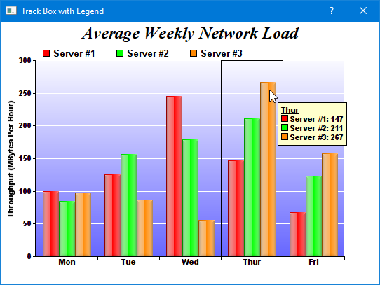

NOTE: For conciseness, some of the following descriptions only mention
QChartViewer (for Qt Widgets applications). Those descriptions apply to
QmlChartViewer (for QML/Qt Quick applications) as well.
This sample program demonstrates a track cursor programmed with the following features:
- A box that horizontally centers around the x data value nearest to the mouse cursor.
- A floating legend box that moves with the mouse cursor, displaying the data values at the x data value nearest to the mouse cursor.
The code first draws the chart. Then in the
QChartViewer.mouseMovePlotArea signal handler, the track cursor is drawn to reflect the mouse position. The track cursor is configured to automatically hide itself when the mouse leaves the plot area.
The
trackBoxLegend method is the routine that draws the track cursor. Its key elements are:
- To draw dynamic contents on the chart, the code obtains the DrawArea object for drawing on the dynamic layer of the chart using BaseChart.initDynamicLayer.
- The nearest x data value is obtained using XYChart.getNearestXValue.
- The code draws a rectangle that horizontally spans from (x - 0.5) to (x + 0.5) with DrawArea.rect. The +/- 0.5 offset is the suitable value to use for a label based x-axis (that is, for axis set up with Axis.setLabels or Axis.setLabels2). For this type of axis, the label distance is assumed to be 1 x-axis unit irrespective of what are the labels, so an offset of 0.5 refers to the middle position between two labels.
- The code then iterates through all data sets in all layers to find all the data points at the nearest x data value. For each of these points, it formats a legend entry for the point, which consists of the data set icon (obtained using DataSet.getLegendIcon), data set name (obtained using DataSet.getDataName), and the data value (obtained using DataSet.getValue).
- Finally, the code combines all the legend entries into a legend box and draws it near the mouse cursor using DrawArea.text.
[Qt Widgets version] qtdemo/trackbox.cpp
#include <QApplication>
#include "trackbox.h"
#include <vector>
#include <sstream>
#include <algorithm>
TrackBox::TrackBox(QWidget *parent) :
QDialog(parent)
{
setWindowTitle("Track Box with Legend");
// Create the QChartViewer and draw the chart
m_ChartViewer = new QChartViewer(this);
drawChart(m_ChartViewer);
// Set the window to be of the same size as the chart
setFixedSize(m_ChartViewer->width(), m_ChartViewer->height());
// Set up the mouseMovePlotArea handler for drawing the track cursor
connect(m_ChartViewer, SIGNAL(mouseMovePlotArea(QMouseEvent*)),
SLOT(onMouseMovePlotArea(QMouseEvent*)));
}
TrackBox::~TrackBox()
{
delete m_ChartViewer->getChart();
}
//
// Draw the chart and display it in the given viewer
//
void TrackBox::drawChart(QChartViewer *viewer)
{
// The data for the bar chart
double data0[] = {100, 125, 245, 147, 67};
double data1[] = {85, 156, 179, 211, 123};
double data2[] = {97, 87, 56, 267, 157};
const char *labels[] = {"Mon", "Tue", "Wed", "Thur", "Fri"};
int noOfPoints = (int)(sizeof(data0)/sizeof(*data0));
// Create a XYChart object of size 540 x 375 pixels
XYChart *c = new XYChart(540, 375);
// Add a title to the chart using 18 pts Times Bold Italic font
c->addTitle("Average Weekly Network Load", "Times New Roman Bold Italic", 18);
// Set the plotarea at (50, 55) and of 440 x 280 pixels in size. Use a vertical gradient color
// from light blue (f9f9ff) to blue (6666ff) as background. Set border and grid lines to white
// (ffffff).
c->setPlotArea(50, 55, 440, 280, c->linearGradientColor(0, 55, 0, 335, 0xf9f9ff, 0x6666ff), -1,
0xffffff, 0xffffff);
// Add a legend box at (50, 28) using horizontal layout. Use 10pts Arial Bold as font, with
// transparent background.
c->addLegend(50, 28, false, "Arial Bold", 10)->setBackground(Chart::Transparent);
// Set the x axis labels
c->xAxis()->setLabels(StringArray(labels, noOfPoints));
// Draw the ticks between label positions (instead of at label positions)
c->xAxis()->setTickOffset(0.5);
// Set axis label style to 8pts Arial Bold
c->xAxis()->setLabelStyle("Arial Bold", 8);
c->yAxis()->setLabelStyle("Arial Bold", 8);
// Set axis line width to 2 pixels
c->xAxis()->setWidth(2);
c->yAxis()->setWidth(2);
// Add axis title
c->yAxis()->setTitle("Throughput (MBytes Per Hour)");
// Add a multi-bar layer with 3 data sets
BarLayer *layer = c->addBarLayer(Chart::Side);
layer->addDataSet(DoubleArray(data0, noOfPoints), 0xff0000, "Server #1");
layer->addDataSet(DoubleArray(data1, noOfPoints), 0x00ff00, "Server #2");
layer->addDataSet(DoubleArray(data2, noOfPoints), 0xff8800, "Server #3");
// Set bar border to transparent. Use glass lighting effect with light direction from left.
layer->setBorderColor(Chart::Transparent, Chart::glassEffect(Chart::NormalGlare, Chart::Left));
// Configure the bars within a group to touch each others (no gap)
layer->setBarGap(0.2, Chart::TouchBar);
// Set the chart image to the QChartViewer
viewer->setChart(c);
}
//
// Draw track cursor when mouse is moving over plotarea
//
void TrackBox::onMouseMovePlotArea(QMouseEvent *)
{
trackBoxLegend((XYChart *)m_ChartViewer->getChart(), m_ChartViewer->getPlotAreaMouseX(),
m_ChartViewer->getPlotAreaMouseY());
m_ChartViewer->updateDisplay();
// Hide the track cursor when the mouse leaves the plot area
m_ChartViewer->removeDynamicLayer("mouseLeavePlotArea");
}
//
// Draw the track box with legend
//
void TrackBox::trackBoxLegend(XYChart *c, int mouseX, int mouseY)
{
// Clear the current dynamic layer and get the DrawArea object to draw on it.
DrawArea *d = c->initDynamicLayer();
// The plot area object
PlotArea *plotArea = c->getPlotArea();
// Get the data x-value that is nearest to the mouse
double xValue = c->getNearestXValue(mouseX);
// Compute the position of the box. This example assumes a label based x-axis, in which the
// labeling spacing is one x-axis unit. So the left and right sides of the box is 0.5 unit from
// the central x-value.
int boxLeft = c->getXCoor(xValue - 0.5);
int boxRight = c->getXCoor(xValue + 0.5);
int boxTop = plotArea->getTopY();
int boxBottom = plotArea->getBottomY();
// Draw the track box
d->rect(boxLeft, boxTop, boxRight, boxBottom, 0x000000, Chart::Transparent);
// Container to hold the legend entries
std::vector<std::string> legendEntries;
// Iterate through all layers to build the legend array
for(int i = 0; i < c->getLayerCount(); ++i) {
Layer *layer = c->getLayerByZ(i);
// The data array index of the x-value
int xIndex = layer->getXIndexOf(xValue);
// Iterate through all the data sets in the layer
for(int j = 0; j < layer->getDataSetCount(); ++j) {
DataSet *dataSet = layer->getDataSetByZ(j);
// Build the legend entry, consist of the legend icon, the name and the data value.
double dataValue = dataSet->getValue(xIndex);
if ((dataValue != Chart::NoValue) && (dataSet->getDataColor() != (int)Chart::Transparent)) {
std::ostringstream legendEntry;
legendEntry << dataSet->getLegendIcon() << " " << dataSet->getDataName() << ": "
<< c->formatValue(dataValue, "{value|P4}");
legendEntries.push_back(legendEntry.str());
}
}
}
// Create the legend by joining the legend entries
if (legendEntries.size() > 0) {
std::ostringstream legend;
legend << "<*block,bgColor=FFFFCC,edgeColor=000000,margin=5*><*font,underline=1*>" <<
c->xAxis()->getFormattedLabel(xValue) << "<*/font*>";
for (int i = ((int)legendEntries.size()) - 1; i >= 0; --i)
legend << "<*br*>" << legendEntries[i];
legend << "<*/*>";
// Display the legend at the bottom-right side of the mouse cursor, and make sure the legend
// will not go outside the chart image.
TTFText *t = d->text(legend.str().c_str(), "Arial Bold", 8);
t->draw((std::min)(mouseX + 12, c->getWidth() - t->getWidth()), (std::min)(mouseY + 18,
c->getHeight() - t->getHeight()), 0x000000, Chart::TopLeft);
t->destroy();
}
}
[QML/Qt Quick version] qmldemo/trackbox.qml
import QtQuick
import QtQuick.Window
import QtQuick.Controls
import advsofteng.com 1.0
Window {
title: "Track Box with Floating Legend"
visible: true
modality: Qt.ApplicationModal
width: viewer.width
maximumWidth: viewer.width
minimumWidth: viewer.width
height: viewer.height
maximumHeight: viewer.height
minimumHeight: viewer.height
// The backend implementation of this demo.
TrackBoxDemo { id: demo }
QmlChartViewer {
id: viewer
Component.onCompleted: demo.drawChart(this)
// Update track cursor on mouse move
onMouseMovePlotArea: demo.drawTrackCursor(this, chartMouseX, chartMouseY)
}
}
[QML/Qt Quick version] qmldemo/trackbox.cpp
#include "trackbox.h"
#include <sstream>
TrackBox::TrackBox(QObject *parent) : QObject(parent)
{
m_currentChart = 0;
}
TrackBox::~TrackBox()
{
delete m_currentChart;
}
//
// Draw the chart and display it in the given viewer
//
void TrackBox::drawChart(QmlChartViewer *viewer)
{
// The data for the bar chart
double data0[] = {100, 125, 245, 147, 67};
double data1[] = {85, 156, 179, 211, 123};
double data2[] = {97, 87, 56, 267, 157};
const char *labels[] = {"Mon", "Tue", "Wed", "Thur", "Fri"};
int noOfPoints = (int)(sizeof(data0)/sizeof(*data0));
// Create a XYChart object of size 540 x 375 pixels
XYChart *c = new XYChart(540, 375);
// Add a title to the chart using 18 pts Times Bold Italic font
c->addTitle("Average Weekly Network Load", "Times New Roman Bold Italic", 18);
// Set the plotarea at (50, 55) and of 440 x 280 pixels in size. Use a vertical gradient color
// from light blue (f9f9ff) to blue (6666ff) as background. Set border and grid lines to white
// (ffffff).
c->setPlotArea(50, 55, 440, 280, c->linearGradientColor(0, 55, 0, 335, 0xf9f9ff, 0x6666ff), -1,
0xffffff, 0xffffff);
// Add a legend box at (50, 28) using horizontal layout. Use 10pts Arial Bold as font, with
// transparent background.
c->addLegend(50, 28, false, "Arial Bold", 10)->setBackground(Chart::Transparent);
// Set the x axis labels
c->xAxis()->setLabels(StringArray(labels, noOfPoints));
// Draw the ticks between label positions (instead of at label positions)
c->xAxis()->setTickOffset(0.5);
// Set axis label style to 8pts Arial Bold
c->xAxis()->setLabelStyle("Arial Bold", 8);
c->yAxis()->setLabelStyle("Arial Bold", 8);
// Set axis line width to 2 pixels
c->xAxis()->setWidth(2);
c->yAxis()->setWidth(2);
// Add axis title
c->yAxis()->setTitle("Throughput (MBytes Per Hour)");
// Add a multi-bar layer with 3 data sets
BarLayer *layer = c->addBarLayer(Chart::Side);
layer->addDataSet(DoubleArray(data0, noOfPoints), 0xff0000, "Server #1");
layer->addDataSet(DoubleArray(data1, noOfPoints), 0x00ff00, "Server #2");
layer->addDataSet(DoubleArray(data2, noOfPoints), 0xff8800, "Server #3");
// Set bar border to transparent. Use glass lighting effect with light direction from left.
layer->setBorderColor(Chart::Transparent, Chart::glassEffect(Chart::NormalGlare, Chart::Left));
// Configure the bars within a group to touch each others (no gap)
layer->setBarGap(0.2, Chart::TouchBar);
// Set the chart image to the QChartViewer
viewer->setChart(m_currentChart = c);
}
//
// Draw track cursor when mouse is moving over plotarea
//
void TrackBox::drawTrackCursor(QmlChartViewer *viewer, int mouseX, int mouseY)
{
trackBoxLegend((XYChart *)viewer->getChart(), mouseX, mouseY);
viewer->updateDisplay();
// Hide the track cursor when the mouse leaves the plot area
viewer->removeDynamicLayer("mouseLeavePlotArea");
}
//
// Draw track line with data labels
//
void TrackBox::trackBoxLegend(XYChart *c, int mouseX, int mouseY)
{
// Clear the current dynamic layer and get the DrawArea object to draw on it.
DrawArea *d = c->initDynamicLayer();
// The plot area object
PlotArea *plotArea = c->getPlotArea();
// Get the data x-value that is nearest to the mouse
double xValue = c->getNearestXValue(mouseX);
// Compute the position of the box. This example assumes a label based x-axis, in which the
// labeling spacing is one x-axis unit. So the left and right sides of the box is 0.5 unit from
// the central x-value.
int boxLeft = c->getXCoor(xValue - 0.5);
int boxRight = c->getXCoor(xValue + 0.5);
int boxTop = plotArea->getTopY();
int boxBottom = plotArea->getBottomY();
// Draw the track box
d->rect(boxLeft, boxTop, boxRight, boxBottom, 0x000000, Chart::Transparent);
// Container to hold the legend entries
std::vector<std::string> legendEntries;
// Iterate through all layers to build the legend array
for(int i = 0; i < c->getLayerCount(); ++i) {
Layer *layer = c->getLayerByZ(i);
// The data array index of the x-value
int xIndex = layer->getXIndexOf(xValue);
// Iterate through all the data sets in the layer
for(int j = 0; j < layer->getDataSetCount(); ++j) {
DataSet *dataSet = layer->getDataSetByZ(j);
// Build the legend entry, consist of the legend icon, the name and the data value.
double dataValue = dataSet->getValue(xIndex);
if ((dataValue != Chart::NoValue) && (dataSet->getDataColor() != (int)Chart::Transparent)) {
std::ostringstream legendEntry;
legendEntry << dataSet->getLegendIcon() << " " << dataSet->getDataName() << ": "
<< c->formatValue(dataValue, "{value|P4}");
legendEntries.push_back(legendEntry.str());
}
}
}
// Create the legend by joining the legend entries
if (legendEntries.size() > 0) {
std::ostringstream legend;
legend << "<*block,bgColor=FFFFCC,edgeColor=000000,margin=5*><*font,underline=1*>" <<
c->xAxis()->getFormattedLabel(xValue) << "<*/font*>";
for (int i = ((int)legendEntries.size()) - 1; i >= 0; --i)
legend << "<*br*>" << legendEntries[i];
legend << "<*/*>";
// Display the legend at the bottom-right side of the mouse cursor, and make sure the legend
// will not go outside the chart image.
TTFText *t = d->text(legend.str().c_str(), "Arial Bold", 8);
t->draw((std::min)(mouseX + 12, c->getWidth() - t->getWidth()), (std::min)(mouseY + 18,
c->getHeight() - t->getHeight()), 0x000000, Chart::TopLeft);
t->destroy();
}
}
© 2023 Advanced Software Engineering Limited. All rights reserved.